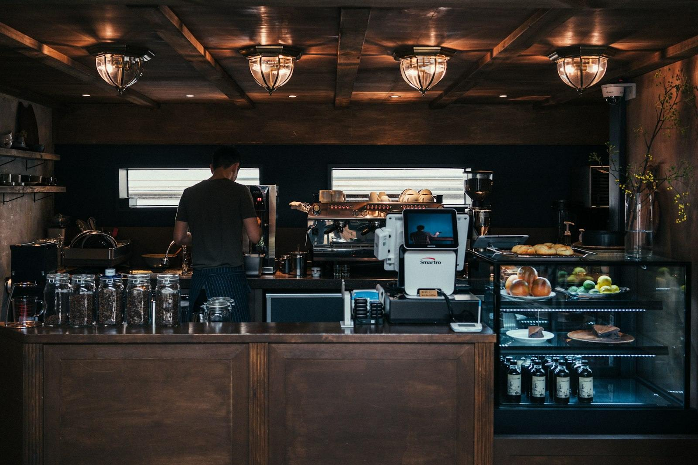

Текст справа сменяется по ходу прокрутки, пока это остаётся на месте.
«Зёрна» начались с одного вопроса: почему хороший кофе почти невозможно найти рядом с домом? В 2019 году мы поставили первую обжарочную машину в 20 квадратных метрах и с тех пор обжариваем зерно сами - партиями, которые можно пересчитать по мешкам, а не по тоннам.
Мы не покупаем зерно на бирже через три слоя посредников. Ездим к фермерам, пробуем урожай на месте и берём то, что нравится нам самим - поэтому меню меняется вслед за сезоном, а не остаётся одинаковым круглый год.
Кофейня выросла из одной точки в три, но подход не изменился: маленькие партии, честная цена и бариста, которые действительно разбираются в том, что наливают.
Пять лет на обжарке, различает регионы по запаху зерна с закрытыми глазами.
Чемпион города по латте-арт 2024 года, учит новичков команды с первого дня.
Следит, чтобы каждая чашка доходила до гостя именно такой, какой её задумали.